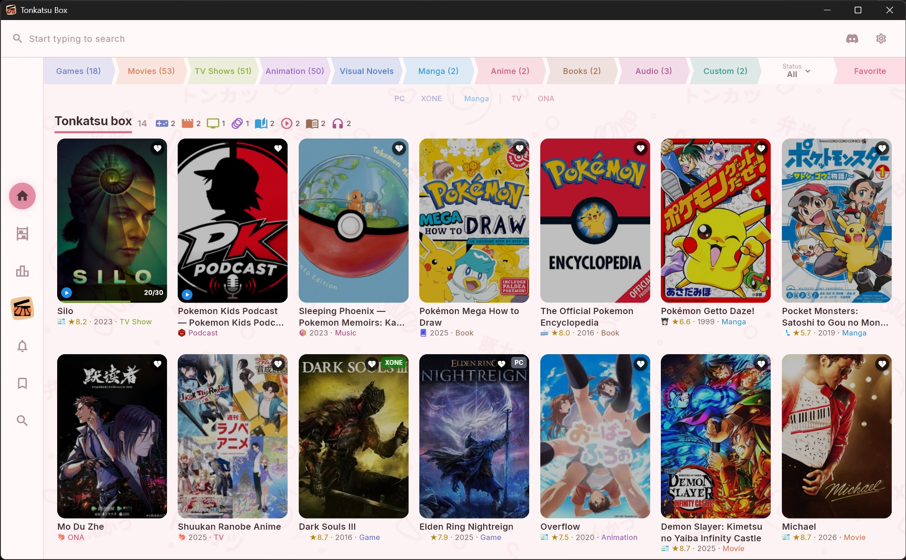
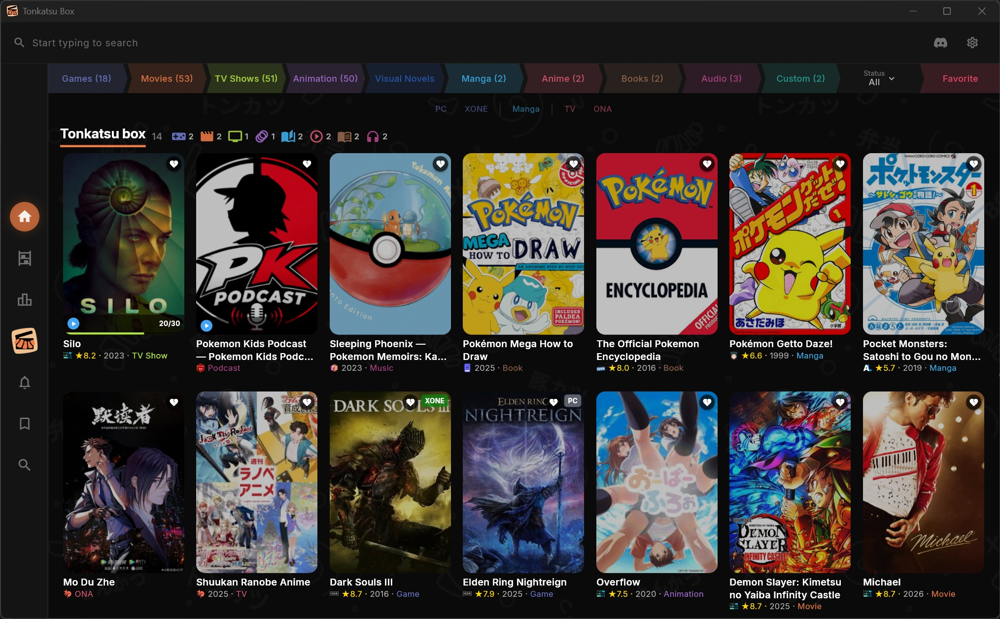
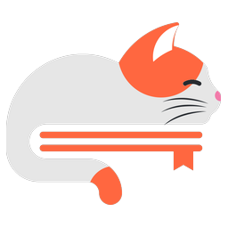
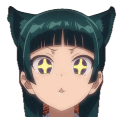
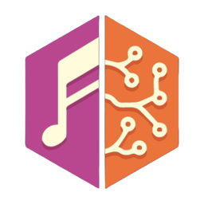

The games database behind Twitch — hundreds of platforms, from the Atari 2600 to today.
Build collections, track what you're playing, watching, reading and listening to, rank it in tier lists — on your desktop, your phone, or your own server.
Windows · Linux · macOS · Android · or self-hosted in a browser


Two full themes — the original Dark and the light Sakura. Drag the handle to compare; switch for real in Settings → Appearance.
Every medium has databases that know it best. Tonkatsu Box asks them all at once — and none of them needs an API key to get started.
The games database behind Twitch — hundreds of platforms, from the Atari 2600 to today.
Pull your own library in through the Web API, playtime included.
Retro titles with their achievement sets and your unlock progress.
Swap any cover for a nicer one — grids, heroes and logos.
Posters, cast, ratings and release dates for films and series alike.
Seasons, episode stills and synopses, kept current by its community.
Air dates and the calendar of what is on this week.
Bring over your watch history, ratings and watchlist.
Movies, shows and anime straight from your Simkl account.
Watched films and shows from a CSV export, matched against TMDB.
Anime, manga and light novels with tags and rich filters. No key needed.
A second opinion on anime and manga, with episode data.
Your anime and manga lists from an XML export, scores and progress included.

Chapter-level tracking for everything currently running.

Manga and light novels with editions and alternate titles.
The visual novel database — releases, developers and lengths.
The Internet Archive's catalogue, one record per edition.
Your reading library, with editions picked by language.
Deep coverage of science fiction and fantasy, including novellas.
The long tail — anything with an ISBN.
Comics down to the individual issue and story arc.

Albums with full tracklists — tick them off as you listen.
Open podcast directory — shows, feeds and episodes.
A book tracks pages, manga tracks chapters, a series tracks episodes, an album tracks a listened-track checklist. Same app, different grammar.
Search hundreds of thousands of titles, organize them your way, and track your progress across games, movies, anime, manga, books and audio.
Create unlimited collections by platform, genre, or custom lists. Mix games, movies, anime, manga, novels, and books in a single collection. Grid, list, table and board views.
Fifteen catalogs behind one search field, each with its own filters and an empty-query browse mode. Add a result to several collections at once.
Status, ratings 1–10, start and finish dates, replays, time spent. Reading progress by page for books, chapters for manga, a listened-track checklist for albums.
Season accordion with posters, episode stills, air dates and synopses. Mark an episode, a whole season, or the next unwatched one in a tap.
Episodes, chapters, pages and hours you got through, a status breakdown per media type, a month-by-month ribbon, platforms, formats, tags, best against worst — with a share card to export.
Search books on OpenLibrary, Fantlab, Google Books and Hardcover, and comics on ComicVine — pick editions by language and track reading by page.
Arrange posters on a free-form canvas. Add text notes, images, and links. Draw connections between items. Browse artwork from SteamGridDB.
Rank items into S/A/B/C tiers with drag-and-drop, or build a Mood Grid — an N×M board of items with labels. Export either layout as a shareable PNG.
Import from Simkl, Steam, Trakt.tv, RetroAchievements, MyAnimeList, AniList, Hardcover, an IGDB list or Kinorium. Share collections as .xcoll or .xcollx files.
Rate every title from 1–10 stars. Write personal notes and author reviews visible on export. Track when you started and finished each item.
Full localization with runtime switching. All menus, statuses, labels and messages in English, Russian, Simplified Chinese, Spanish, Brazilian Portuguese and French.
The same library everywhere — one Docker container serves it to every device on your network.
Run the whole thing on a home server and open it in a browser. The library stops living on one machine.
data/ holds the database, the cover cache, your API keys and the pre-migration
snapshots. Backing up is copying it; restoring is copying it back..env or in Settings — the tab never sees them.# clone and start — the first build takes a few minutes git clone https://github.com/hacan359/tonkatsu_box.git cd tonkatsu_box docker compose up -d --build # then open it from anything on your network http://<server-ip>:8080 # updating is the same two lines git pull docker compose up -d --build
Migrations run on start, and the old database is snapshotted to
data/snapshots/ before they do. Put
Caddy in front if you want HTTPS
and a real domain — there is a ready compose file for it. Built for your own network: there is no
login screen, so keep it off the open internet.
Download pre-built collections of top games, movies, and anime. Import and enjoy — works offline immediately.
A free, open-source collection manager for games, movies, TV shows, animation, anime, manga, visual novels, books and audio. You build collections, search fifteen catalogues from one field, track status and ratings, and rank things in tier lists and mood grids. It runs on Windows, Linux, macOS and Android, or self-hosted in a browser. MIT licensed.
Yes, and no. There is no account, no subscription and no server of ours involved — the app talks to the public catalogues directly and keeps your library in a local SQLite file.
Not to get started. AniList, Kitsu, MangaDex, MangaBaka, VNDB, OpenLibrary, Fantlab and Podcast Index answer without one. IGDB, TMDB, TheTVDB, ComicVine, Hardcover, Google Books and SteamGridDB need a free key you register yourself and paste into Settings → API Keys.
Import brings in Steam, Trakt.tv, Simkl, Kinorium, RetroAchievements, MyAnimeList, AniList and Hardcover, plus plain JSON and CSV files and IGDB list exports.
In one SQLite database next to the app, with covers cached beside it. Self-hosted, it is one folder on your server — copy it and you have copied the whole install. Export and backup are built in, and the .xcollx archive is a portable copy you can hand to someone else.
The library does — browsing, editing, rating and progress never touch the network. Searching new titles and downloading covers needs the catalogues, so that part wants a connection.
English, Russian, Simplified Chinese, Spanish, Brazilian Portuguese and French, switchable at runtime without a restart.
Free, open source, and yours to customize.